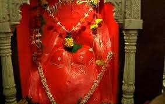
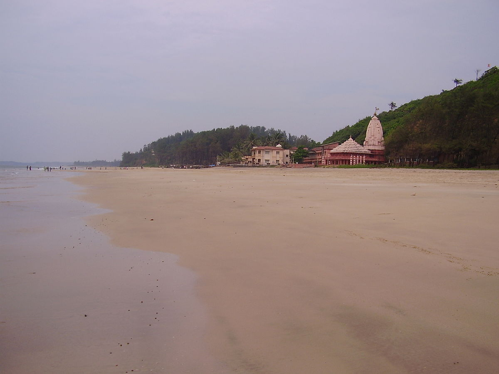

|
|
 |  |
"A Ganesha Temple amidst White Sandy Beaches" Ganpatipule Tourism Beach town on the Konkan coastline, Ganpatipule has temples of Lord Ganesha as major attractions apart from the beautiful virgin beaches. Ganpatipule is a small town in the Ratnagiri district in Konkan region with a long stretch of pristine beaches, Ganpatipule is a perfect idyllic getaway in the slip of nature. Confluence of beach with river could be witnessed along with a hill shaped like Ganpati, the Hindu God of worship. The village of Ganapatipule is famous for its 400-year-old Ganesha temple. The idol is said to be a self-created monolith of Lord Ganesha, allegedly discovered 1600 years ago. Untouched by commercialism Ganapatipule makes for a great destination for peace-seekers, beach lovers and pilgrim alike. Ganpatipule also has water sports to offer between the months of November-May. Ganpatipule is typically clubbed with Ratnagiri and other smaller villages like Velneshwar, Malgund and Pawas for a perfect 2-3 day trip.